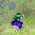

- Welcome to Touhou Wiki!
- Please register to edit. For assistance, check in with our Discord server or IRC channel.
Fandom/Mountain of Faith
< Fandom
Jump to navigation
Jump to search
This sub-article lists unofficial content associated to characters that originally appeared in Mountain of Faith.
Shizuha Aki & Minoriko Aki[edit]
- Despite being older than her sister, Shizuha only appears as a mid-boss in her stage and has no dialogue in the game. This has lead most doujin authors to represent Shizuha as an immature and unreliable older sister who depends on her younger sister for everything.
- She's sometimes shown to be jealous of her sister's greater popularity among humans and/or curvier figure.
- Since the sisters are the spirits of autumn and "disappear" during winter, and Letty Whiterock is the spirit of winter, fans suggest a rivalry between them. This leads to depictions of Shizuha openly attacking Letty; after all, she's a spirit of autumn and despises winter.
- Because the sisters were ranked the lowest of the Windows characters in the 5th annual Touhou Popularity Poll, with Minoriko at 54th and Shizuha at 52nd, there's a running joke in Japan that they're "original characters" (i.e. fanmade characters) with negligible presence in the games. An increase in popularity in 2008 when they were introduced as representing one of the four seasons, when many people didn't even know they actually showed up in the games. There's a doujin anthology project dedicated to the Aki Sisters, perhaps to compensate for this.
- In later years Minoriko's theme has dramatically increased in rank since the 6th Touhou Popularity Poll. The Aki sisters have experienced an increase in 22 ranks for Minoriko and 18 ranks for Shizuha when all the new characters from the games after Mountain of Faith aren't considered.
- In later years the sisters possibly reached a stable position, staying around the 50th place.
- In most fanart, Minoriko is shown to be curvier than Shizuha. The exact reason isn't known but it's speculated that it's due to her being the goddess of harvest and bountiful crops while Shizuha is a leaf goddess. Naturally there's jokes about her "bumper crops". This has also lead to cases of Shizuha molesting her sister on top of occasionally being jealous of Minoriko's figure.
- Minoriko's often considered a bit more popular than Shizuha for this reason and being an actual boss.
- On Shizuha's character portrait, the leaves on her head roughly resembles a crab if they're seen as a single piece rather than two. This occasionally leads to her being associated with one, the leaves on her head being replaced by one, or herself replaced by one in fan works.
- Aoneko (Nicovideo, Pixiv), noted to be one of the biggest fans of the Aki sisters, started an Aki sisters-only video website called AkiTube.
- Even though Shizuha's character portrait, sprite, and each of her print work appearances show the bottom of her dress as being shaped like leaves, many fans omit the detail and instead draw her dress as having a straight edge.
- Fans tend to call Minoriko by her nickname, "Minorin" (みのりん).
Hina Kagiyama[edit]
- Hina's unusual spinning during battle has been included in many fan works, which may have her spinning constantly all the time, as a ritual for gathering misfortune, or simply because she enjoys it.
- This has resulted to comparisons between her and Wallachia from Melty Blood, due to Wallachia spinning a lot and screaming "Reverse the birth, reverse death, reverse the world and SPIN SPIN SPIN! Spin Hina. Spin."
- Some (mostly humorous) depictions show her as addicted to or even aroused by misfortune.
- While she doesn't have any canon relationships, she's almost exclusively paired with Nitori Kawashiro due to their proximity (both live on the Youkai Mountain and are consecutive stage bosses) and their similar circumstances as friendly but isolated youkai. Her ability has also led to pairings with unfortunate characters such as Parsee Mizuhashi.
- There's a recurring meme associating Hina with a gothic theme.
Nitori Kawashiro[edit]
- As traditional depictions of kappa show a bald spot at the top of their heads, rumor has it that her hat is concealing that bald spot. However, ZUN discredited this rumor during a discussion on 2ch after Mountain of Faith was released.
- Some fan works depict her carrying a Pepsi Ice Cucumber in place of the reed she normally has. She's also sometimes depicted wearing a school swimsuit under her dress.
- One of the earliest fan-made vocal arrangements of Nitori's theme music "Nitori's Song (Moe)" (にとりの唄(萌)) has lyrics that translate as "Kappappa kappappa Nitori, you get more than you pay for with Nitori." The latter part is from the slogan of the Nitori store chain, and several doujinshi have made it into something of an unofficial slogan for her as well, appearing on various products created by her. A reference to "kappappa kappappa" subsequently appeared in Subterranean Animism.
- It's speculated that Nitori is one of the kappa who helped Suwako Moriya in the construction of Hisoutensoku.
- Nitori was given an unofficial half-sister called Mitori Kawashiro. See article link for more information.
- Nitori is often shown to be friends with the PC-98 character Rika, since both are engineers and that they both work on tanks together. She may sometimes also appear with Yumemi Okazaki or even Rikako Asakura.
- Aside from Rinnosuke Morichika and Yukari Yakumo, Nitori is considered to be the most technologically advanced in the Touhou universe, often showing her capability to construct modern/futuristic weapons and machinery in fan works. Even when Nitori doesn't appear in person, fanart often uses "NITORI" as a brand name on electronic equipment, such as Aya Shameimaru's camera.
- Nitori is sometimes crossovered with Gordon Freeman due to her crowbar in ULiL.
Momiji Inubashiri[edit]
- Because Momiji's a white wolf tengu, even though some early fanworks showed her looking indistinguishable from a human, it has become common to depict her with a ears and tail off a wolf. Her eyes are often shown to be red, to fit in with the colors of her costume.
- It has been common for fans to call her "MomijiMomiMomi" (もみじもみもみ). Some fans have said ""Momiji needs her Momi" (もみじは彼女のモミを必要とする)".
- Since her profile (see below) says "she has a very cooperative personality and executes her duties faithfully", most fan works depict her as acting like a loyal, affectionate puppy.
- Her profile says she plays "large chess" (大将棋 Dai Shogi), a game similar to chess, with the kappa. Because of that, some fans think that she personally knows Nitori Kawashiro while taking a break from her job.
- There's a fan version of Momiji called a "Mofuji" (もふじ), which depicts Momiji as a puffball similar to the kedama with Momiji-like features. See the search at safebooru for examples.
- Double Spoiler features Momiji's spell card named Dog Sign "Rabies Bite". "Momiji has rabies" jokes are sometimes used throughout the fanbase. The spell card is also popular in various fan works, including song and accompanying flash video by IOSYS, Defence of The Shrines' Warcraft mod and some others.
Aya Shameimaru[edit]
Sanae Kochiya[edit]
- Since the release of Undefined Fantastic Object and Touhou Hisoutensoku, Sanae's popular image has shifted from soft spoken and demure to markedly eccentric with her knowledge of robots, anime and enthusiasm for aliens.
- Mountain of Faith hinted at this eccentric streak long before Undefined Fantastic Object came out, but since this happened only in the endings it remained relatively obscure.
- Sanae's appearance in Subterranean Animism was unexpected by many. Due to that, the fact that she says "You can't let yourself be held back by common sense in Gensokyo, right!?", and her "Miracle Fruit" spell card sounding cute and girly while all of her other spell cards from Mountain of Faith sound much more stoic has earned her the nickname of "Fruits (lol)" (フルーツ（笑）), based on the "Sweets (lol)" (スイーツ（笑）) label, referring to airheaded girls who follow fads without really understanding them. In other words, Sanae's seen as kind of a ditz.
- Sanae's ditziness is somewhat supported by the title she got in Wild and Horned Hermit: "Superficial and Shallow Human"
- Another nickname among the Japanese fans is "絶対許早苗 (Zettai Yuru-Sanae), a pun of ""絶対許さない" (Zettai Yurusanai lit. "absolutely unforgiving"). This is due to her aggressiveness towards youkai, particularly Kogasa Tatara. The nickname is usually combined with a picture of her smug expression from Undefined Fantastic Object against a yellow-and-red-striped background (the Flag of Macedonia), which is a parody of a famous meme of Futaba Channel, "Maji-resu", a serious reply to a troll/joke post.
- Some fans have diagnosed Sanae as suffering from Chuunibyou.
- Since Sanae is originally from the Outside World, some fans draw her in a schoolgirl uniform.
- By extension, this results in Sanae being shown as flirtatous if not outright forward in doujins and is a factor behind her having a curvy figure (modern eating compared to Gensokyo's more traditional fare), the other being her divine ancestory.
- Since Sanae's outfit is similar to Reimu's, fans often refer to her as "Player 2 Reimu" or "2P Reimu", a character who, just like in most computer games, will take over Reimu's position if Reimu (as Player 1) is knocked out. It makes it more fun that there's a alternate palette of Reimu that resembles Sanae's outfit. With Reimu's red outfit and Sanae's green hair, there are even running gags equating the two shrine maidens with Mario and Luigi.

Her pose in Undefined Fantastic Object.
- "Sanae is a good girl" has surfaced as a meme, in the English speaking community, as a result of page 29 from one of Happy Flame Time's comics, entitled Cold Wind but Warm Winter. The meaning to this could go two ways: it could be speaking in its literal sense, or it could indicate that Sanae's a 'naughty girl' in questionable contents.
- Some Western Touhou fans have noticed that when Sanae moves horizontally in Undefined Fantastic Object, her pose resembles Superman.
- Because of Sanae's appearances in numerous titles, many fans in the west have drawn parallels with her to Aya Shameimaru and refer to her as ZUN's "other girlfriend". In addition, since Sanae's often seen as somewhat ditzy and large-chested, as well as the fact that she is strongly associated with both the miko and schoolgirl fetishes, various Japanese fans (including a number of doujin artists) also portray her in a similarly lascivious manner.
- The backlash is very slight but longer lasting compared to with Aya, mostly from people who are annoyed at the lack of Sakuya and those that're increasingly annoyed at how the Moriya Shrine is gaining plot relevance. This has some people mockingly joke that Sanae will become the new main character.
- The revelation that Sanae isn't playable in both Hopeless Masquerade and Double Dealing Character has raised a few questions from fans, particularly as fans were expecting her in the former due to its religion-based plot.
- Undefined Fantastic Object and Touhou Hisoutensoku have made Sanae rather popular though the true extent is hard to tell as she's been placed below the top 10 in recent popularity contests.
- The backlash is very slight but longer lasting compared to with Aya, mostly from people who are annoyed at the lack of Sakuya and those that're increasingly annoyed at how the Moriya Shrine is gaining plot relevance. This has some people mockingly joke that Sanae will become the new main character.
Kanako Yasaka[edit]
- In humorous fanart, Kanako's often depicted as a robot, or an RX-77-2 Guncannon from Mobile Suit Gundam due to the Faith Pillars that attach to her back during the final encounter in Mountain of Faith.
- Kanako is sometimes called by the other nickname: "Misae" (みさえ), which comes from Misae Nohara in Crayon Shin-chan. This is mostly due to the fact that Kanako's hair style resembles the notable and common style of Misae's, often called as "Misae Hair" (みさえヘアー), which gave her the strong impression of it in her first appearance. There was also a specific scene seen in canon in this relation: in Marisa B's ending in Mountain of Faith, Kanako drills Marisa's head with her fists (the commonly known Misae's head drill in Japan) because she built a small shrine in the Forest of Magic, which is rarely visited by people.
- Kanako is also depicted with Yukari Yakumo and Eirin Yagokoro, whom have the same character 八 in their name. This is due to their characteristics and personalities often regarded by some fans as a sign of "elders". In this sense, they're occasionally called the "old hags" in harsh cases.
- Due to how Mountain of Faith's events appear, fans first assumed Kanako as a scheming mastermind, but as time went on (and more of Kanako's plans were shown to fail), this interpretation became less popular. Ironically, recent events have revealed her to be fond of various projects (such as the dam or the sky trolley) meant to gather faith, most of which encountering some sort of trouble.
Suwako Moriya[edit]
- Among the Touhou fandom, Suwako's hat has almost become an entity of its own (generally referred to as "Pyonta" (ぴょんたくん Pyonta-kun)), largely thanks to the imposing leer of the eyes on top. Sometimes the hat is depicted as a parasite or even Suwako's actual body.
- Suwako is heavily symbolized as a frog. While Cirno freezes frogs, this results in rivalry in the fanbase. The frog jokes include relationships with Super Mario Bros. 3 and the Hypnotoad.
- Because of that, Suwako is commonly called "Kero-chan" (ケロちゃん), which appears in the spell card "Kero-chan Braves the Wind and Rain." (「ケロちゃん風雨に負けず」). This nickname was mentioned, for example, in Tetla Pot's PV of Silver Forests's song, Kero⑨Destiny.
- In New Super Marisa Land, the Suwako Hat powerup works just like the Frog Suit in Super Mario Bros. 3. Marisa also takes on the stance Suwako has in the fighting games (being made by the same developers).
- The phrase, "aa— uu—" (あーうー), uttered in Reimu's route in the extra stage, has also become a popular saying attributed to her (as well as a way to refer to her), and is also mentioned by that same song.
- Although Nue Houjuu is the first character officially drawn with Zettai Ryouiki, Suwako has almost always been drawn this way in fanart, even before Touhou Hisoutensoku was released.
- Mishaguji commonly appears in fanworks depicted with Suwako.
Tenma[edit]
- Tenma's gender is unknown. The association with Māra as mentioned above may imply that Tenma is male. However, in fanart, Tenma is often depicted as a female. Sometimes drawn with black wings, short silver hair, and a Tokin.